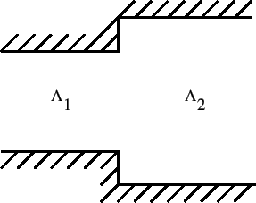
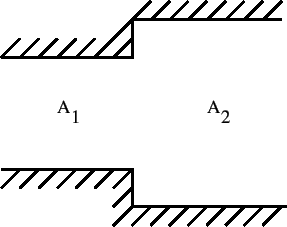

Next: Discontinuous Slope
Up: Fluid Section Types: Open
Previous: Weir Crest
Contents
The weir slope is the downstream element of the boundary element pair defining
a weir. The following constants have to be specified on the
line beneath the *FLUID SECTION,TYPE=CHANNEL WEIR SLOPE card:
- the width

- the slope
 (if
(if  the slope is calculated from the
coordinates of the end nodes belonging to the element)
the slope is calculated from the
coordinates of the end nodes belonging to the element)
- the length
 (if  the length is calculated from the
coordinates of the end nodes belonging to the element)
(if  the length is calculated from the
coordinates of the end nodes belonging to the element)
- the trapezoid angle

- the grain diameter
 for the White-Colebrook law or the Manning
constant
for the White-Colebrook law or the Manning
constant  for the Manning law (in the latter case the user has to specify
the parameter MANNING on the *FLUID SECTION card)
for the Manning law (in the latter case the user has to specify
the parameter MANNING on the *FLUID SECTION card)
- the number of the upstream weir crest element
The meaning of and can be derived from Figure
122. The value of  is used to determine the critical
depth on the crest. Moreover, it is used in the Bresse equation in case the
flow is determined by the downstream conditions (inundated crest). It should
simulate the mean slope in the absence of the weir. The length of the weir
is shown in Figure 124.
is used to determine the critical
depth on the crest. Moreover, it is used in the Bresse equation in case the
flow is determined by the downstream conditions (inundated crest). It should
simulate the mean slope in the absence of the weir. The length of the weir
is shown in Figure 124.
Example files: channel7.
Next: Discontinuous Slope
Up: Fluid Section Types: Open
Previous: Weir Crest
Contents
guido dhondt
2018-12-15